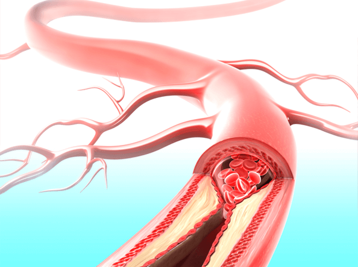

أنا مندهش من الطريقة التي يعالج بها المصرين ارتفاع ضغط الدم. طبيب قلب سويسري في مقابلة مع التلفزيون المصرى.
لورين لوبريينو هي رئيسة مركز طب القلب السريري في جنيف ، وهي عيادة مشهورة عالميًا في جنيف.
سافر حازم جمال إلى إسبانيا العام الماضي لدراسة تجربة زملائه الإسبان. في بلدنا ، حسب لورين ، فإن تطوير القطاع الطبي ضعيف للغاية.
بعد خطابات طموحة ، وافقت الدكتورة لورين لوبريينو على إجراء مقابلة مع التلفزيون المصرى. ما الذي كره طبيب الطب المصرى الشهير؟ ولماذا يدعي أن مرضى ارتفاع ضغط الدم المصرين لن يتعافوا أبدًا؟
في مقابلتك مع المراسلين ، أخبرت شيئًا عن الطب المصرى ، عندما سمعت أنني فوجئت جدًا. هل يمكنك التعليق على هذا؟
لا أريد الإساءة إلى مصر ، فأنا أحترم الثقافة المصريه وشعبها ، لكني أود أن أكرر ما قلته. إن مستوى القطاع الطبي المصرى يفاجئ الزملاء الأوروبيين حقًا. يعالج الطب المصرى الطريقة التي عولج بها المرضى قبل 20 أو 30 عامًا. على الأقل أنا أتحدث عن علاج أمراض القلب والأوعية الدموية وارتفاع ضغط الدم.
انظر ما يوصي به الأطباء لعلاج ارتفاع ضغط الدم في مصر: ليزينوبريل ، أملوديبين ، كلورو تالاكسيد ، إنالابريل ، فالسارتان وأدوية مماثلة.
ومع ذلك ، فإن هذه الأدوية لا تعالج ارتفاع ضغط الدم ؛ فهي تخفض ضغط الدم. تخيل الآن ما يحدث على مستوى الجسم. يأخذ المريض الدواء وينخفض ضغط دمه. ومع ذلك ، بعد فترة ، يزداد الضغط مرة أخرى. هذه التغييرات تضر الجسم أكثر من ارتفاع ضغط الدم المستمر. تتفكك الأوعية الدموية بسرعة كبيرة مما يؤدي إلى نوبة قلبية أو سكتة دماغية.
في بقية أوروبا ، لم يتم استخدام هذه الطريقة للتحكم في ارتفاع ضغط الدم لأكثر من 20 عامًا. وحبوب خفض ضغط الدم لا تستخدم إلا في حالات نادرة بالطبع وليس كل يوم. تُباع هذه الأدوية في سويسرا بوصفة طبية فقط وليس بمثل هذه الكميات.
أطبائك والصيادلة يقتلون الناس! من الواضح أن بيع الأدوية باستمرار لخفض ضغط الدم بأسعار مرتفعة أكثر ربحية من علاج ارتفاع ضغط الدم. هذا مريع!
- ماذا عن علاج ارتفاع ضغط الدم في سويسرا؟
- أدرك العلماء السويسريون منذ فترة طويلة أنه من الضروري القضاء على أسباب ارتفاع ضغط الدم وليس العواقب. هذا هو مفتاح العلاج الشامل والآمن. ما هو السبب الرئيسي لارتفاع ضغط الدم؟ انقباض الاورده الخفيفة! يحدث ارتفاع ضغط الدم المرتبط بالعمر عند البشر بمرور الوقت ويمثل 96٪ من الحالات. يعالج الطب السويسري الحديث ارتفاع ضغط الدم هذا.
تخيل أن الأوعية عبارة عن أنابيب. جدران الأنابيب متسخة ويصعب على المياه المرور خلالها. ومع ذلك ، يجب أن تتدفق المياه وتمر عبر الأنابيب بكميات كافية. ما هو المطلوب لمرور الماء؟ حق! زيادة الضغط. هذا ما يفعله القلب. وهذا يؤدي إلى ارتفاع ضغط الدم ، وبالتالي سرعة تآكل عضلة القلب. تم اختراع طريقة أخرى - لتنظيف الأوعية من التلوث. إليك كيفية علاج ارتفاع ضغط الدم في سويسرا.
في عام 800 بعد الميلاد ، بدأ الأطباء الصينيون في استخدام مادة خاصة مشتقة من الأرز المخمر تسمى خميرة الأرز الأحمر. تعمل هذه المادة على خفض مستويات الكوليسترول - ونتيجة لذلك ، يتم تطهير الأوعية الدموية ، واسترخاء الدورة الدموية ، وعودة ضغط الدم إلى طبيعته. إلى النهاية! بتعبير أدق ، حتى تتسخ الأوعية الدموية مرة أخرى ، لكن الأمر سيستغرق عدة عقود. لا حاجة لأدوية أخرى لخفض ضغط الدم. سوف تتوقف عن الخوف من أن يؤدي ارتفاع ضغط الدم إلى تدمير الأعضاء الداخلية (إتلاف جميع أجهزة الجسم). يمكن للناس أن يصبحوا أصحاء.
عندما رأيت إحصائيات الطب المصرى ، تأثرت كثيرًا. مصر لديها مؤشر إحصائي مرتفع للوفيات (وفاة ملايين الأشخاص من الأمراض كل عام). هذا ليس سرطان ، هذا ليس إيدز ، هذا ارتفاع ضغط الدم! ويموتون من هذا المرض مبكرًا: 80٪ من مرضى ارتفاع ضغط الدم الأساسي لا يعيشون حتى 60 عامًا!
اليوم في سويسرا ، لا يُعتبر ارتفاع ضغط الدم مرضًا خطيرًا عندما يتعلق الأمر بارتفاع ضغط الدم المرتبط بالعمر. تشير الزيادة في ضغط الدم فقط إلى أن الأوعية الدموية متسخة وتتطلب التنظيف. بعد ذلك يتوقف ضغط الدم عن الارتفاع.
- كيف يتم تنظيف النظارات في سويسرا؟
يوجد اليوم مستحضرات خاصة مصممة لتطهير الأوعية الدموية من الكوليسترول. تحتوي على خميرة الأرز الأحمر. إنه علاج جيد. يحتوي على خميرة الأرز الأحمر في شكل سهل الهضم بشكل خاص ، مما يسرع من عمل التحضير.
يتضمن أكثر من 40 مكونًا. لن اذكرهم ، سأذكر القليل منهم.
- هل يباع هذا الدواء في الصيدليات في مصر؟
- لا ، وهذه هي المشكلة الرئيسية. يفضل الأطباء المصرين إطعام الأشخاص بأقراص ضغط الدم بدلاً من علاج ارتفاع ضغط الدم. علاوة على ذلك ، ليس هناك شك في أن أطباء القلب المصرين ، المهتمين على الأقل بالعلاجات الحديثة ، يدركون اللون الأحمر خميرة الأرز ولها تأثيرات مفيدة على الأوعية الدموية.
على حد علمي ، أرادت الشركة المصنعة المصريه دخول سوق الأدوية. ومع ذلك ، لم يتم السماح بمئات العقبات ، ولم يتم التخلص من البيروقراطية في مصر بعد. هذا أمر مفهوم: إذا بدأ بيع هذا الدواء في الصيدليات ، فستتكبد مافيا الأدوية المصريه خسائر فادحة. علم الأدوية هو عمل اليوم! حتى في أوروبا. ولكن هناك أيضًا أعمال نزيهة في أوروبا ، لن أقولها عن مصر.
بماذا تنصح المرضى المصرين المصابين بارتفاع ضغط الدم؟
يؤثر التأخر في الطب المصري على أولئك الذين تزيد أعمارهم عن 50 عامًا. لحسن الحظ ، هناك طريقة للخروج. لقد اتفقنا مع أكبر معهد مصري لأمراض القلب حول إمكانية بيع الدواء لجميع المقيمين في مصر الذين يعانون من ارتفاع ضغط الدم. العاملين أمراض القلب في مصر يقومون بإنشاء وتوريد الكمية المطلوبة من العشب بأسعار منخفضة. وبالتالي ، يمكن للمواطنين المصرين أن يسألوا الآن مع تسليم.
الآن دعني أخبرك بما عليك القيام به لطلب :
- قم بزيارة الموقع الرسمي طب القلب مصر واترك طلبك ؛
- بعد فترة ، سيتصل بك مستشار طبي ويجيب على جميع الأسئلة. أعطه عنوان التسليم ؛
- بعد 5-7 أيام ، سوف تحتاج إلى استلام التسليم بالبريد ودفع ثمن الطلب.
نوزع لمدة 3 شهور. استغل 19 ألف مواطن مصري هذه الفرصة. اسأل كل من يتلقى اطلب منهم اختبارهم لمعرفة كيفية عمل الدواء. هذا العام ، شارك 3000 شخص في الاستطلاع.
نتائج المسح للمرضى الذين تلقوا الدورة:
- استقر ضغط الدم تمامًا - تم علاج ارتفاع ضغط الدم): 98٪ من المستجيبين ؛
- عاد معدل ضربات القلب إلى طبيعته - 97٪ من المستجيبين ؛
- اختفى الصداع: 99٪ من المجيبين ؛
- تحسن البصر - 74٪ من المستجيبين ؛
- تحسن الوضع الصحي - 99٪ من المستجيبين.
كما ترون ، ساعد العديد من المواطنين المصرين في التخلص من مرض قاتل من مرض قاتل في دورة واحدة فقط.
- ما هي المدة التي سيباع فيها العشب بأقل سعر؟
- حتى تنفد العشب. أود أن أحذرك من وجود عدد قليل جدًا من الطرود المتبقية. ربما يفهم الناس فعالية هذا العشب عند مقارنته بأقراص خفض ضغط الدم.
أوصي بأن يطلب مرضى ارتفاع ضغط الدم العشب أثناء توفره.